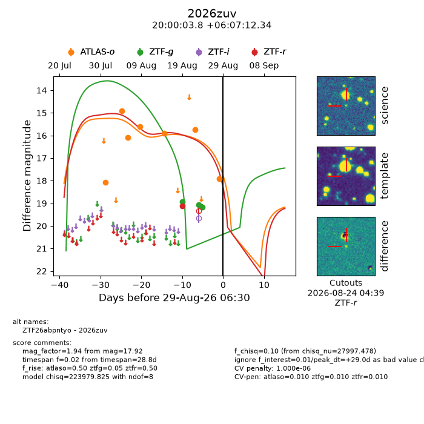
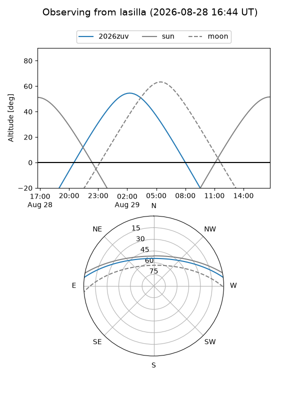
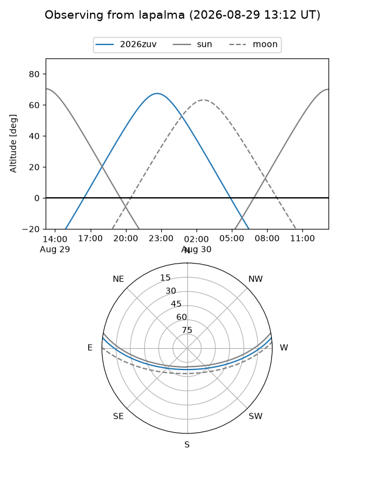
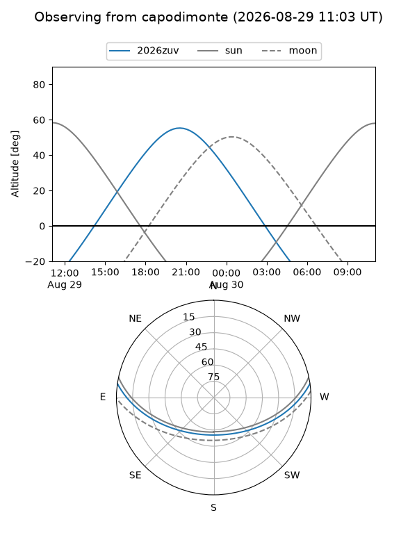
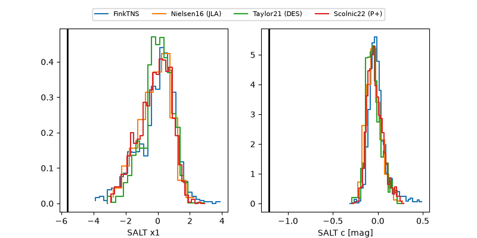

2026zuv
Target 2026zuv at 2026-08-29 18:27
Aliases and brokers:
FINK-ZTF: ztf.fink-portal.org/ZTF26abpntyo
Lasair-ZTF: lasair-ztf.lsst.ac.uk/objects/ZTF26abpntyo
ALeRCE-ZTF: alerce.online/object/ZTF26abpntyo
YSE-PZ: ziggy.ucolick.org/yse/transient_detail/2026zuv
TNS name: wis-tns.org/object/2026zuv
Direct TNS query: direct search
alt names
ZTF26abpntyo (ztf,fink_ztf)
2026zuv (tns,yse)
Coordinates:
equatorial (ra, dec) = 300.0159,+6.12010
equatorial (HMS+DMS) = 20:00:03.81,+06:07:12.34
galactic (l, b) = (46.4625,-12.26419)
Flags:
TNS type: nan
peak dt: +29.5
likely cv: !!
Photometry:
last atlaso=17.92, ztfg=19.17, ztfr=19.13
7 atlaso, 3 ztfg, 1 ztfr detections
Lightcurve

Visibility



Additional plots
